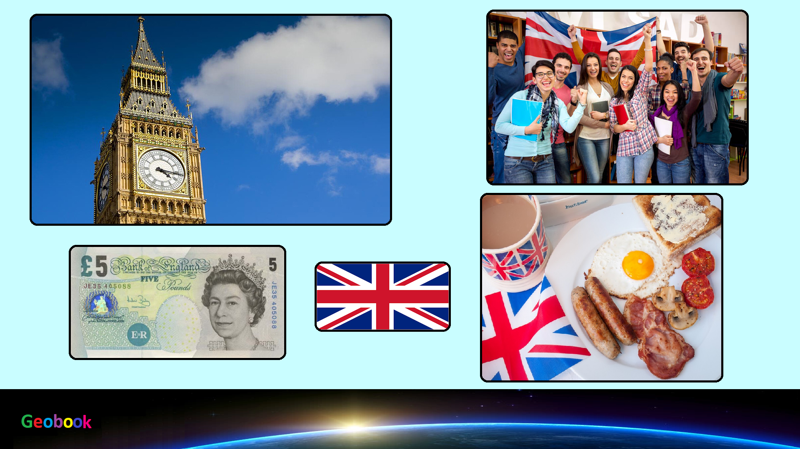

____
Традиционная еда
Бифштекс — блюдо из жареной говядины, изначально один из видов стейка, стейк из головной части вырезки.
Бисквит — кондитерское тесто и кондитерский «хлеб», приготовленный из муки, сахара и яиц. В англоязычных странах термин «бисквит» употребляется для других продуктов.
Корниш пасти — небольшой овальный печёный пирог из теста, нередко слоеный, со всевозможными начинками; классическим считается вариант с картофелем, луком и кусочками говядины. Также популярны пироги с сыром, курицей и свининой.
Ростбиф — большой кусок говядины, который запекается в духовом шкафу.

____
